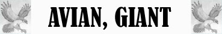

Resistenza Minore al Freddo

|
|
Ambiente/Habitat | Coste |
| Frequenza | Very Rare | |
| Organizzazione | Solitario | |
| Periodo di Attività | Day | |
| Dieta | Carnivore | |
| Intelligenza | Animal (1) | |
| Punti Combattimento | Nessuno | |
| Tesoro | Occasionale (nel nido) | |
| Allineamento Dominante | Neutrale | |
| Numero di Apparizione | 1 | |
| Classe Armatura | 6 [10 base, -4 corazza] | |
| Movimento | 6 camminare / 15 volare / 6 nuotare | |
| Dadi Vita | 7 | |
| Thac0 | 14 | |
| Numero di Attacchi | Becco | |
| Danni | 2d6+3 (penetrazione) | |
| Poteri Offensivi | Nessuno | |
| Poteri Difensivi | Resistenza Minore
all'Acqua; Resistenza Minore al Freddo |
|
| Poteri Generici | Nessuno | |
| Vulnerabilità | Nessuna | |
| Resistenza alla Magia | Nessuna | |
| Sensi | Vista Comune, Sensi Superiori | |
| Dimensioni | Huge (9 m. apertura alare) | |
| Morale | Champion (15) | |
| Valore in Punti Esperienza | 1044 |
| MODIFICATORI AI TIRI SALVEZZA | |||||||||||||||||||||||
| COR | 0 | 45 | ENV | 0 | 50 | MAG | 0 | 59 | MAL | 0 | 44 | MEN | 0 | 57 | RIF | 0 | 53 | ROB | 0 | 47 | VEL | 0 | 41 |
Descrizione
Il Giant Gull è la versione gigante del comune gabbiano con ali lunghe e becco robusto, a volte leggermente adunco. Le ali sono solitamente di colore bianco, grigio o nero e nei giovani anche marrone. Un esemplare gigante di Giant Gull può avere un'apertura alare di circa nove metri.
Combat
Essendo sempre affamati i granchi giganti attaccano le loro prede in corpo a corpo lacerandone la pelle a brandelli e facendo fede sulla difesa costituita dal loro pesante carapace.
RESISTENZA MINORE ALL'ACQUA (Typical Ability): Il corpo della creatura è particolarmente resistente ai danni, sia magici che naturali, prodotti tramite l'acqua (indipendente dalla tipologia di danno prodotto), per tale motivo la stessa riduce del 25% (per eccesso) tutti i danni prodotti utilizzando l'acqua o altri liquidi (come ad esempio l'acido). Inoltre la creatura riceverà un bonus di +1 a tutti i tiri salvezza contro effetti prodotti utilizzando acqua od altri tipi di liquidi.
RESISTENZA MINORE AL FREDDO (Typical Ability): Il corpo della creatura è particolarmente resistente ai danni da freddo per tale motivo costei riduce del 25% per eccesso tutti i danni da freddo subiti siano sia di natura magica che normale.
Habitat/Society
Si tratta di un enorme uccello marino che nidifica su alte ed impervie scogliere. Questo uccello predatore si nutre di grossi pesci (come tonni, squali e mammiferi marini) ed è ghiotto di crostacei giganti. Se affamato non esita ad attaccare imbarcazioni o piccoli villaggi per cibarsi anche di carne di creature terrestri.
Ecology
In un nido di gabbiano gigante vi è il 33% di possibilità di trovare 1d3 grosse uova dal peso di 5 libbre l'una. Queste uova sono molto ricercate sul mercato potendo essere piazzate a circa 500 monete d'oro l'una. Se, infatti, è allevato ed addestrato da quando è un pulcino un gabbiano gigante può divenire una cavalcatura volante (prova di -2 sulla competenza Animal Training) mentre non è possibile addestrare esemplari adulti. Un uovo si schiude mediamente in 1d3 mesi, mentre il pulcino per divenire adulto richiede sei mesi. Un pulcino di gabbiano gigante necessita di 5 libbre di carne fresca al giorno, mentre un esemplare adulto necessita in media di 50 libbre di carne fresca al giorno. Un esemplare adulto addestrato per essere cavalcato come cavalcatura ha un valore di circa 12.500 monete d'oro. Costui può decollare e volare trasportando fino ad un peso pari a 500 libbre (oltre al peso della sella e dei finimenti necessari ad essere cavalcato) a pieno fattore movimento, non riuscendo però a mantenere il volo se ingombrato oltre tale ammontare.